USER GUIDE
Having a Glamorous e-Commerce theme is one of the foremost necessities of being an
e-commerce success. With Kinetik, you have got this covered.
Install Theme
Once you have bought the theme from the Odoo Apps store, you will notice that you have got two folders.
The first one is ‘ks_theme_base’ and the second one is ‘ks_theme_kinetik’.
Step 1 : Place both of the folders with your other addons.
Step 2 : And search for the Kinetik theme.
Step 3 : Install the ‘ks_theme_kinetik’ and after it ‘ks_theme_base’ will be automatically installed.
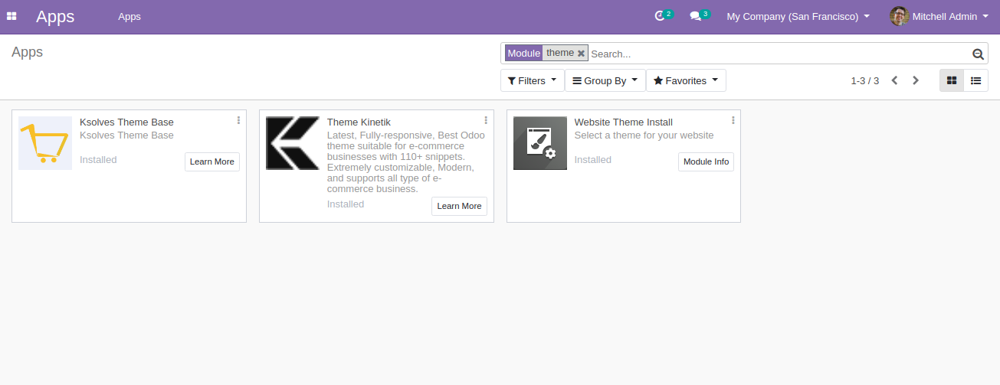
Customize Theme
The theme menu lets you customize the menu according to the Theme Color, Header, Footer, Button Effect and Button style. After Installing the theme, go to the Web page and click on the ‘Customize’ button.
From the list click on ‘Customize Theme’ to set/change the header Styles.
Theme Color and Text Color
The user can change the theme color and text color and make sure to choose the one which suits their brand.
Theme Font
The user can customize the theme font with the given font list.
Users can also upload their own Google font and apply it to the theme.
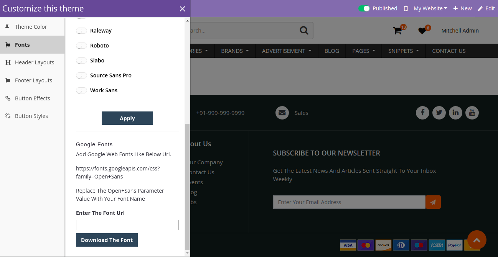
Website Configuration
Once the theme Kinetik has been installed, Kinetik Theme Configuration is on
the Website Menu for the header to carry out the backend configuration for the Kinetik theme.
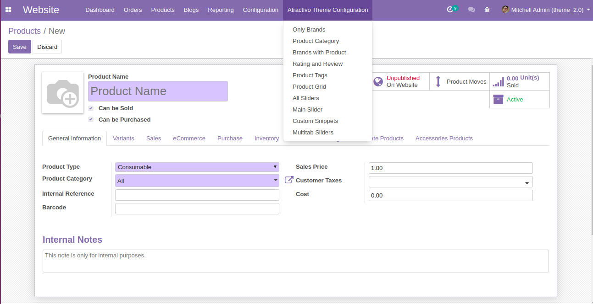
Customize Product Category
Create any product category as per the requirement.
To create a product category, go to tab Configuration > eCommerce categories. All of the e-commerce which has been created will be displayed.
If the user wants to create one, click on Create.
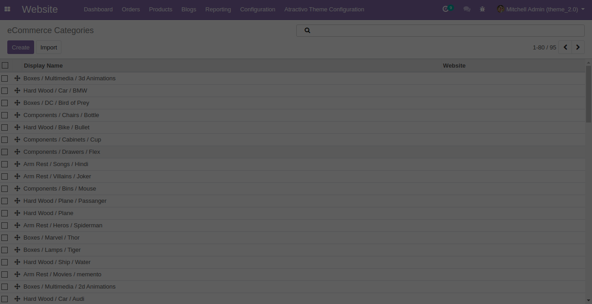
When clicking on the Create button, a form view is opened which asks you to fill in
the features to add in a category. This particular can be added to the Trendy Style snippet by clicking on Trendy Checkbox
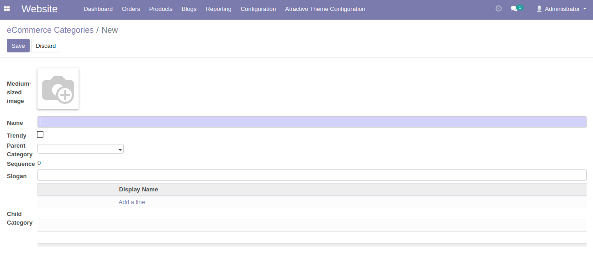
Custom Snippet Builder
In addition to providing 90+ Dynamics and 15+ Static snippets,
we are providing you with an option to build your own snippets. Just code your own requirements and use it with our theme.
If you need our help on the same, please get in touch with us at sales@ksolves.com
Website > Kinetik Theme Configuration > Custom Snippet
Custom Snippet Builder Backend View
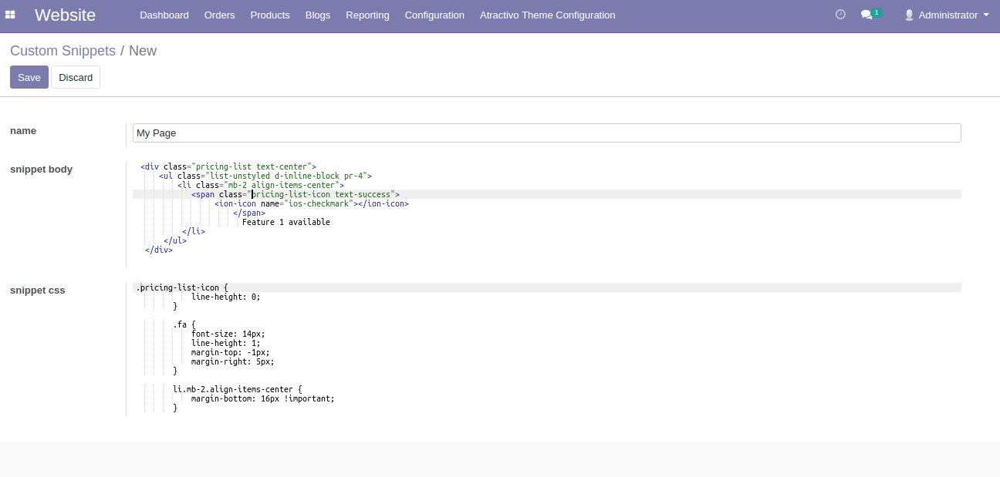
Custom Snippet Builder Frontend View
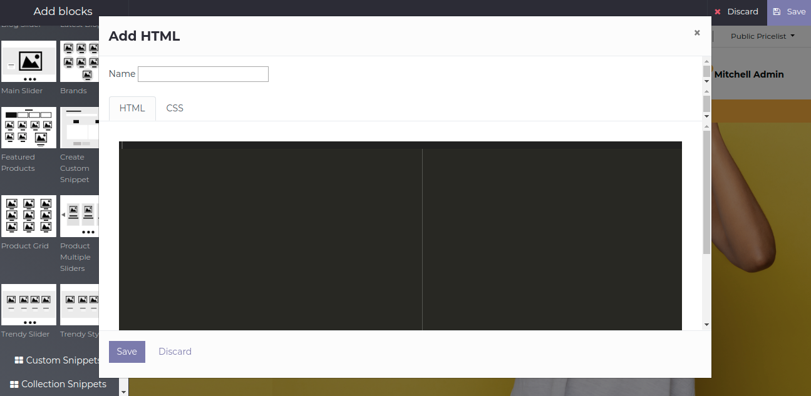
Advanced Search with Suggestions
In Kinetik, we’ve built a feature called Advanced Search. It is the USP as just by typing one
letter the product listing will be available and you can select the product.
Products Variants and Brand Filters
Different products can have different variants, Kinetik is pre-loaded with product variants
feature, which can be activated and customized according to the requirement.
Go to Sales  Configuration
Attributes
Configuration
Attributes
Below is a screenshot with the required information that you wish to configure.
We’re configuring color attributes for e-commerce websites using the Kinetik theme.
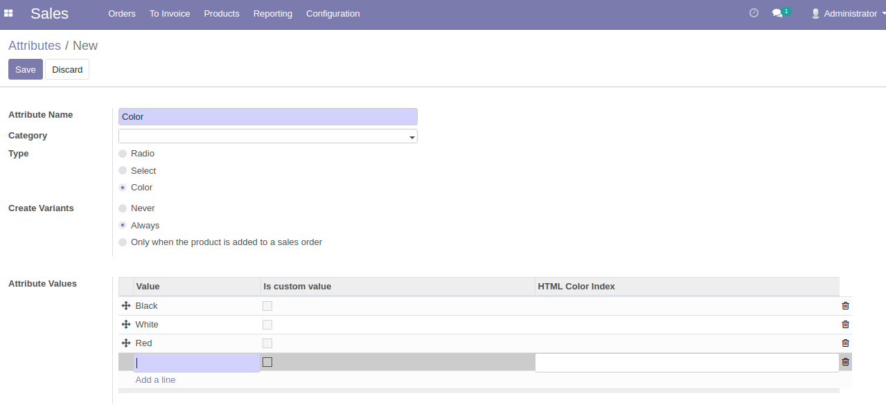
Once you have created the attributes, you need to activate the same.
Go to Sales
Settings
Product Catalog
Check the checkbox for Variants and Options
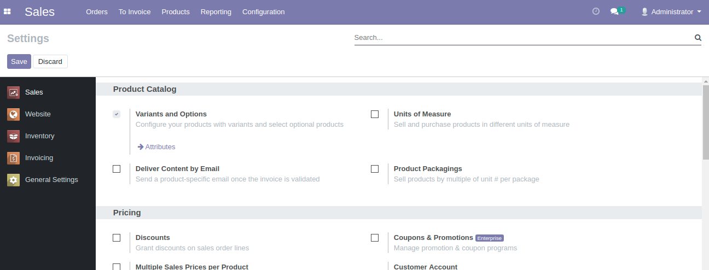
Using our theme, you can also add filters to your attributes, categories, brands and price.For the
same, go to
Website
Customize
CUnder Products options
, activate the Kinetik Attribute's, Brand's and Price's Filters.
Customize Product Views
You can customize your products views as per your requirement.
Go to Website
Customize
Select option for product as per your requirement
Detail Page of a Product- Horizontal
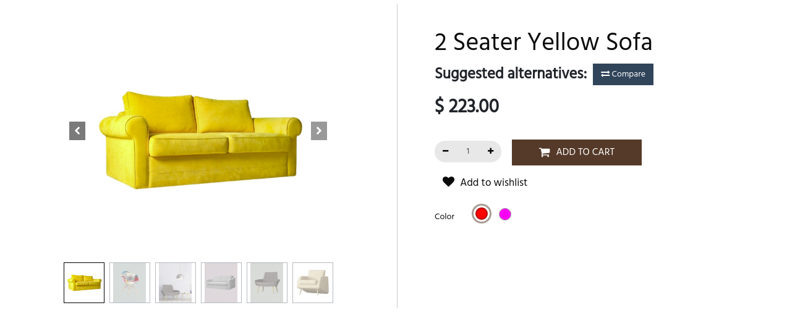
Multi-image View Product- Vertical
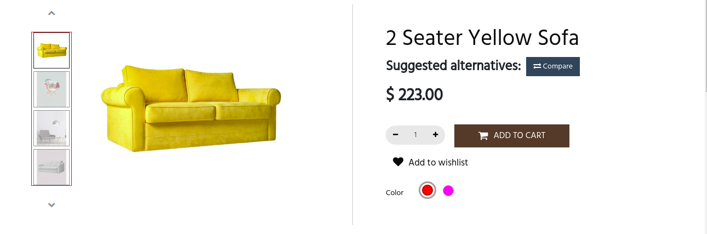
Users can customize their products according to the different variations in the setting.
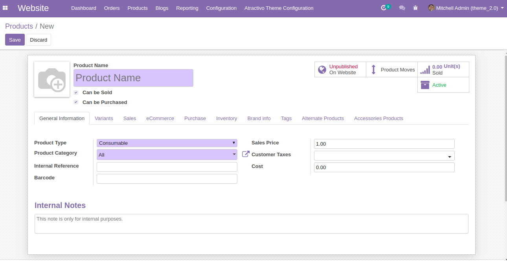
Special Features: Slider View for Alternative and Accessories Products
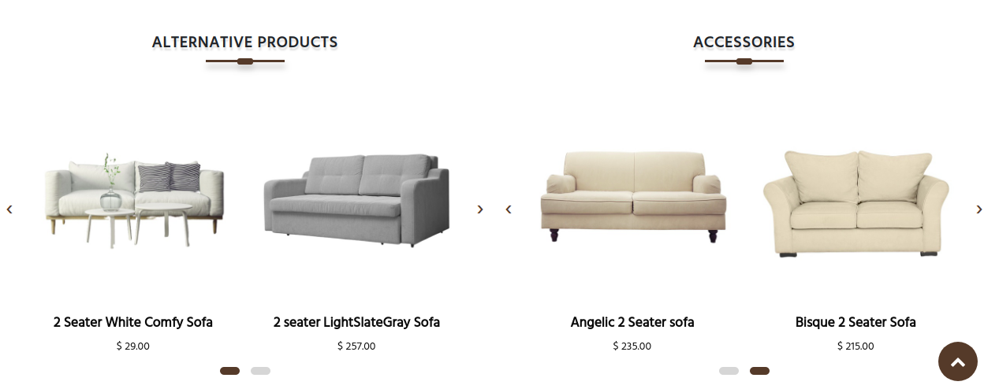
Dynamic Snippets
With our Kinetik theme, customize the website with our specially designed dynamic and static snippets
to bring out the WOW factor.
Product Grid
With the help of this snippet, display your products in Grid form. Grid has two templates which are given below:
Go to
Kinetik Theme Configuration
Product Grid
Click on Create when you create the Product in the Product Grid.
Under any of the Products list multiple snippets and uses on your website.
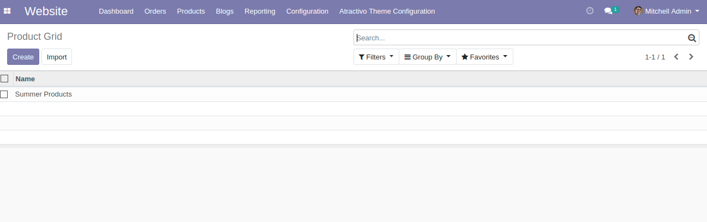
You can add as many products you want in your grid as per your requirement.
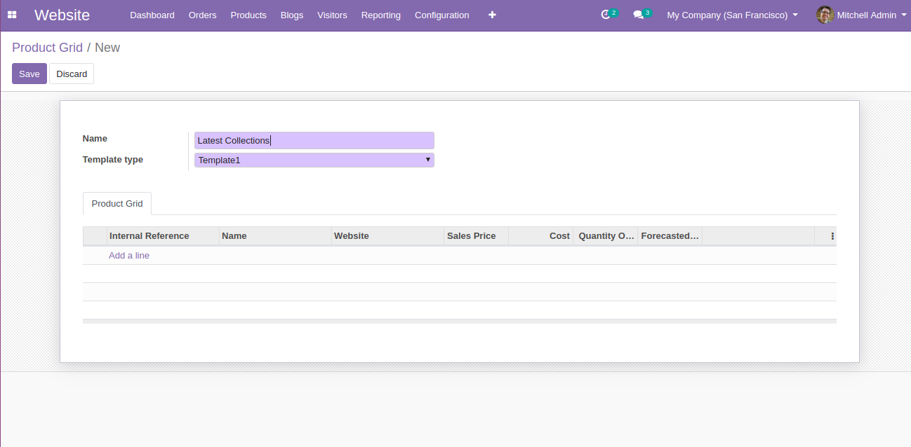
Template 1
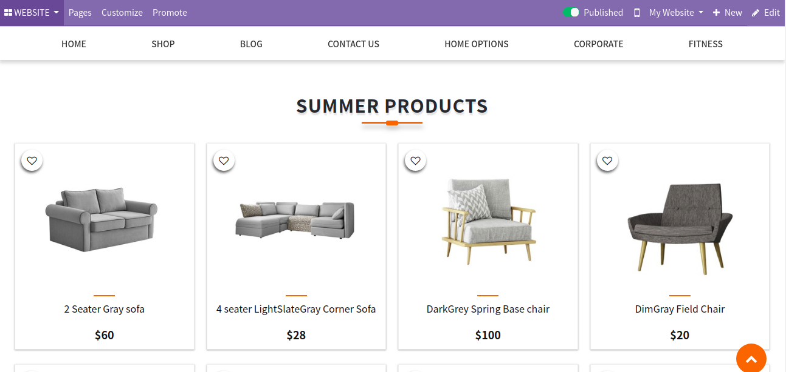
Template 2
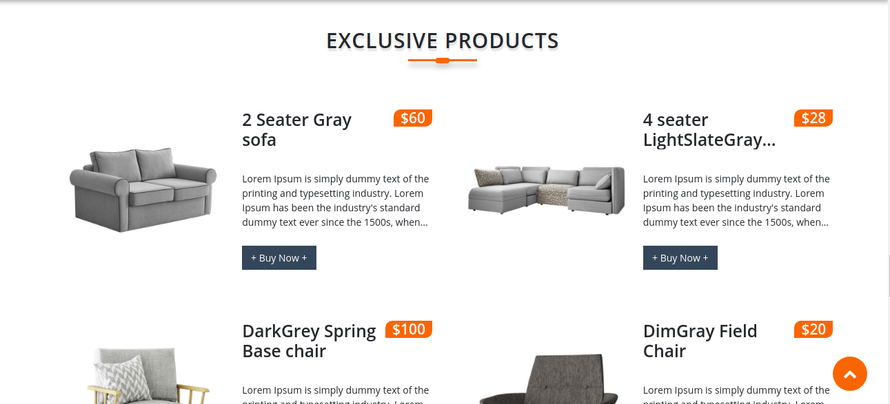
All Slider
Kinetik also provides multiple sliders to display the products.
Go to
Kinetik Theme Configuration
All Slider
Customers can select brands, categories, blogs or products from here.
Once you choose the same, you will see a Product Slider creation list view.
The list view shows a list of all product sliders that you have created.
Select Create option to create a new Multi Product Slider.
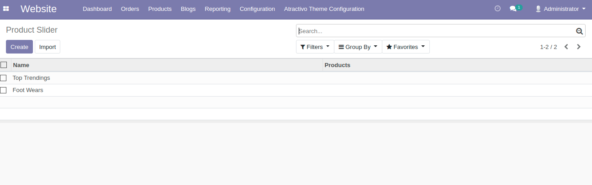
Once you select the created option, a form view opens.
Fill in all the information that you require in your product slider and configure it according to your requirement.
This is how it’ll display the product once the user
Main Slider
Accentuate the look of your website by creating your own main sliders for products,
categories, brands or offers etc. that you wish to highlight.
Go to
Kinetik Theme Configuration
Main Slider
The list view displayed shows you the list of sliders you have created. In order to create a new
main slider, choose the create option.
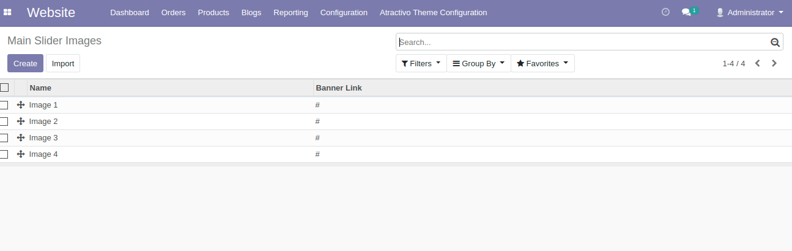
Once you choose create option, a form view opens asking you to choose the slider
banner image, the name of the slider and the link which you wish to hyperlink.
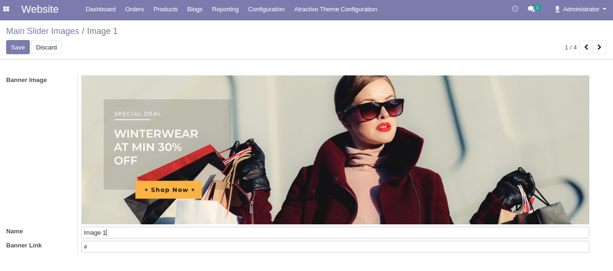
This is how the Main Slider Looks
Featured Snippet
Some of the features can be listed as New Arrivals, Top Trending, Most Popular, and Classics.
This comes under the Featured Snippet provided by the Kinetik theme which is pre-built.
You can assign these tags to your products while creating products.
Go to
Kinetik Theme Configuration
Product Tags
We have displayed a list of 4 Product Tags.
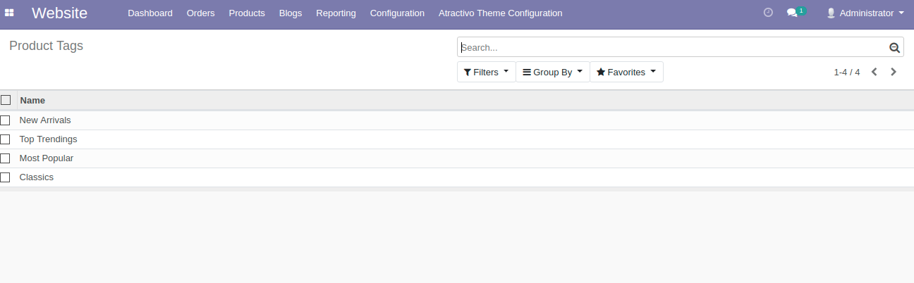
On Clicking the Product Tag Report, the user can change the name of any tag. Also,
add the products to be displayed under those tags
within this form view window.
Category Snippet
Using this snippet, you can make category wise sliders for your products.
Go to
Configuration
e-Commerce Categories
From here the user can create the new Categories.
This is what it looks like:
Brand Snippet
The snippet highlights Top Brands on your website.
Go to
Kinetik Theme Configuration
Brand Snippet
This information should be given to create customized snippets.
Note: If you wish to display a particular Brand in the Brand Snippet,
remember to check out the Published checkbox.
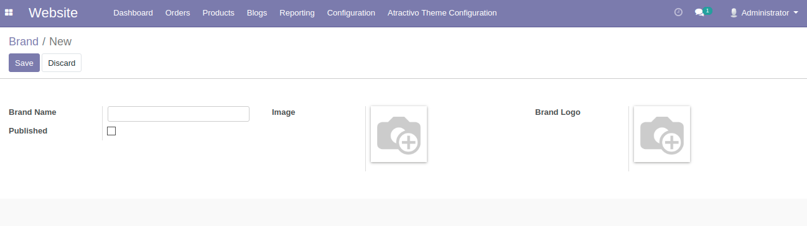
This is how the Brand Kanban looks
Blogs
The Kinetik theme customizes the view of the Blogs. This tab is used to design the view of
how the Blog section will be displayed.
Blog Snippet
Use this snippet to display the latest 3 blogs.
Website > Blogs > Create
Multi Tab Slider
Multi Tab Slider is also best used for advertising multiple numbers of products in a single view under several tabs.
Recently Viewed Products
A recently Viewed Product is a feature where the customer views the product once they have been searched for and will be displayed in the Recently Viewed Products.
Shop Page
The product displays on the e-commerce website in an attractive way now in the Kinetik theme.
Advance Page Design
Advance Page Design shows the product description in a much advanced way.
The product now has Title, Description and Price.
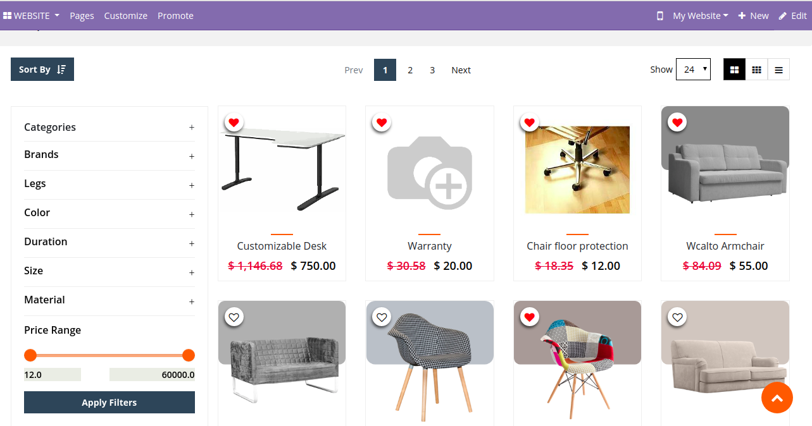
Product Per Page
The user can select the products to be displayed per page by selecting the features.
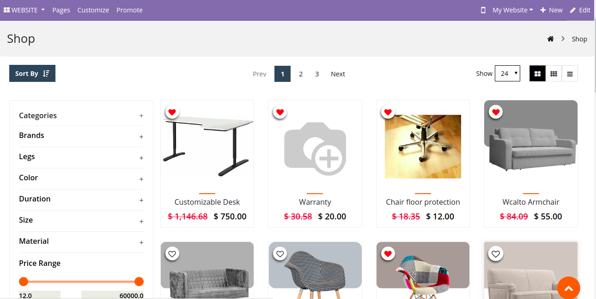
Here in the screenshot, this shows 24 products to be displayed on the page.
Product Infinite Loader
> Turn on the product's infinite loader from the customized Theme menu
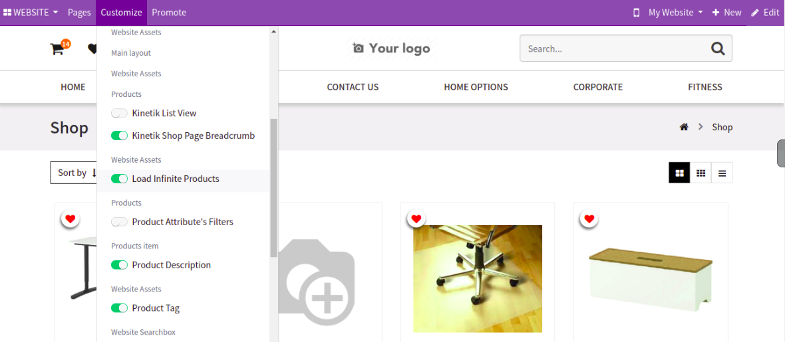
> Product Infinite Loader shows a different product when the user scrolls instead of the Page number
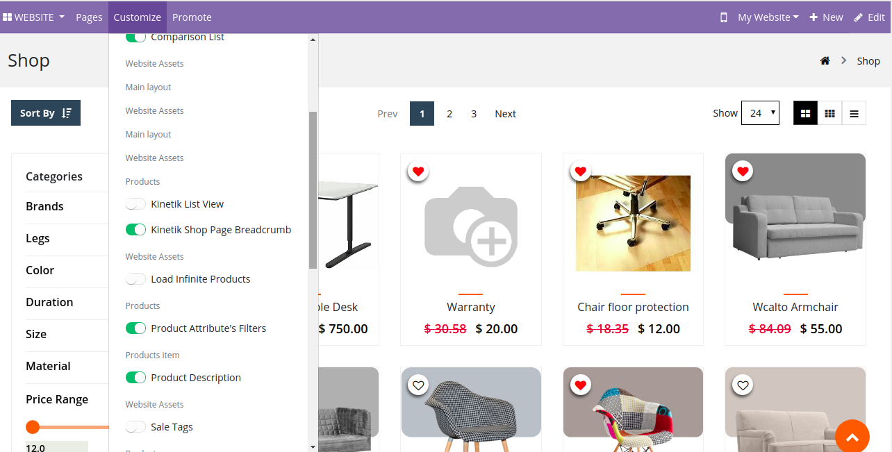
Static Filter View
1. Users can turn on the static filter views from the customized theme menu.
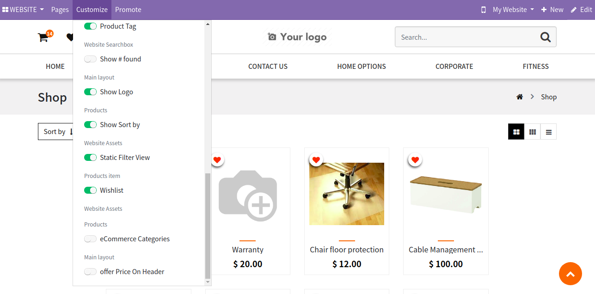
2. Static Filter View lets the user view the product by setting the filter in different variations such as Brands Color, Duration, Size etc.
Note: Make sure you have turned on eCommerce categories and Product Attribute’s Filter
Product Page Offer Timer
Users can enable an ‘Offer timer clock’ feature which displays the countdown timer on the offer from the pricelist.
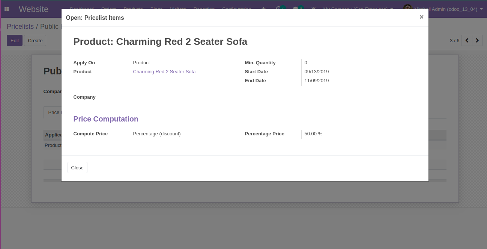
Users can set the offer on Product template/ Product variants/ Category and with this when the user selects
the product in bulk the offer timer shows for the bulk products.
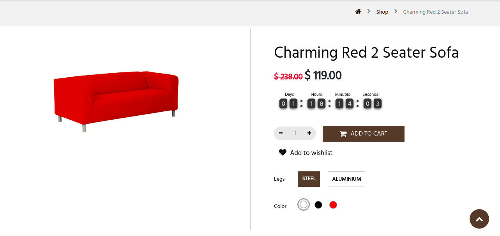
Size Chart
For Uploading the ‘Size Chart’ you need to click on the menu then,
Go to
Website
Products
Products
When a user click on the Products, user can upload ‘Size Chart’ as displayed in the form.
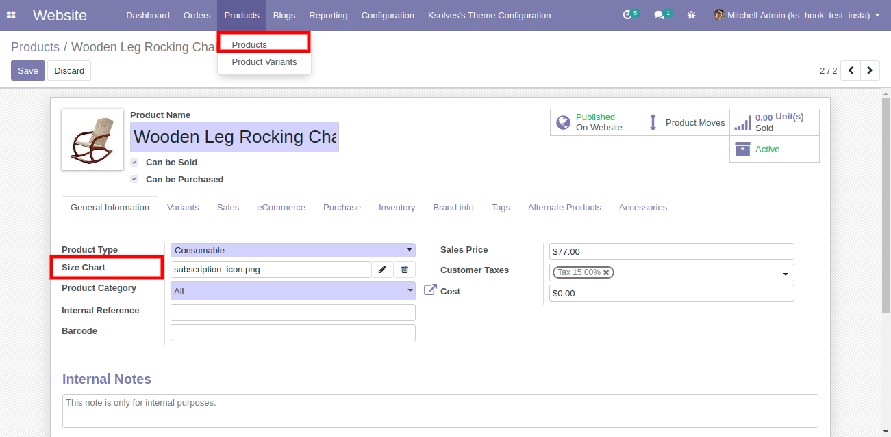
User can see the ‘Size Chart’ on the Products detail page of Website and ‘Size Chart’ button displayed on the page.
By clicking on the ‘Size Chart’ button, the user can see the Product Size Chart.
Landing Page
For Using the ‘Landing Page’, the user needs go to the Kinetik Repository by following the path ’theme-kinetik/ks_theme_kinetik/static/landing_modules’ .
In the landing_modules folder, the user will find all the landing page modules. After that, you can just copy the path ’/theme-kinetik/ks_theme_kinetik/static/landing_modules’ and paste it to the ’odoo-server.conf’ file, for the module that you needs to see.
For example : ‘addons_path = /theme-kinetik/ks_theme_kinetik/static/landing_modules,‘.
Now the user need to
Go to
Website
Configuration
Settings
When a user clicks on the ’Settings’, you will be able to select the ‘Landing pages’ that you needs to use, as displayed in the form.
Previous and Next Product
When a User click on the ’Previous’ button on product detail page then it will redirect to the previous product detail page and If he click on ’Next’ button then it will redirect to the next product detail page.
Trending Products
Trending Products is a feature in which the User will view the list of the products that have been viewed by the user and those products will display in the Trending Products.

.png)


.png)


.png)